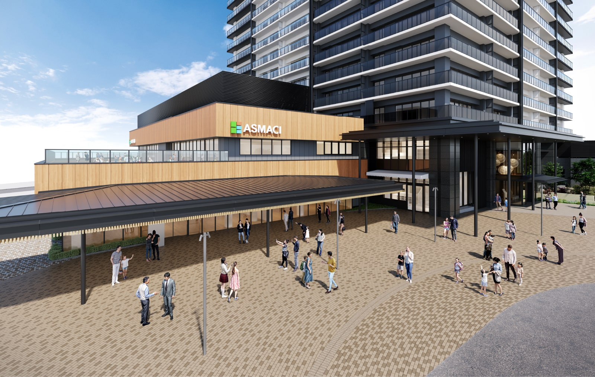

外観完成予想図
憧憬の視線を集めるタワーデザイン。
門真市のランドマークにふさわしい美しさと誇らしさを纏うタワー。
落ち着いたモノトーンを基調とした地上41階の建物は、
配色の切り替えによって縦方向のラインを強調することでスタイリッシュな印象を演出。
生まれ変わる駅前街区に都会的で洗練された風景を描き出します。
LAND SCAPE
持続的な賑わいを創出するランドプラン。
タワーを西側に集約することで、
敷地の東側を自由に行き来できる約2,000㎡のオープンスペースを創出します。
北側には車寄せと駐車場を設け、歩車分離の動線を実現。
また、タワーの基壇部には、日常の生活・健康・学びを支える
機能を持った施設を誘致予定※1です。
敷地配置概念図
グランドエントランス完成予想図
穏やかで誇らしい、迎賓の構え。
贅沢なゆとりを感じさせるアプローチの先に待つのは、
２層吹抜の空間を包み込むガラスウォールと大きな庇を配した、
大らかな迎賓の空気を漂わせるエントランス。
四季の彩りと潤いをプロローグとして、
このタワーに住む喜びが一歩ずつ深まっていきます。
くすのき広場完成予想図
それぞれの時を彩る、「くすのき広場」。
タワーの東側に広がるのは、緑と木漏れ日に包まれた「くすのき広場」。
街区を南北に貫く動線であり、憩いの空間であり、
さらには、子供たちがのびのびと過ごせる交流の場でもある広場が、
それぞれの日常のシーンを優しく彩ります。
-

外観完成予想図
-
街の賑わいの中心となる、
「（仮称）ASMACI古川橋」を併設。（仮称）ASMACI古川橋には、子供と家族、地域の方々の日常の生活・健康・学びを支える機能を持った施設を誘致し、隣接する施設との連携により、暮らしの利便性と門真市の魅力を高めます。
出典：門真市ホームページ（2024年6月現在）
2026年度開業予定／2024年6月現在
※1. 2026年度開業予定／2024年6月現在
※掲載の完成予想図は計画段階の図面を基に描き起こしたものに人物等をCG合成したもので、実際とは多少異なります。また、形状の細部および設備機器等については省略しております。
※外構・植栽計画は今後変更される場合がありますので、あらかじめご了承ください。
※敷地内の樹木等はある程度生育した後をイメージして描いたものです。また、葉や花の色合い、樹形等はイメージであり実際とは異なります。なお、植栽計画は変更される場合がありますので、あらかじめご了承ください。
※掲載の敷地配置概念図は計画段階の図面を基に描き起こしたもので、形状・色等は実際とは多少異なります。また、一部敷地外の道路等を合わせて着彩しています。
※本物件敷地周囲4mの部分は多目的通路の予定の他、東側約2,000㎡は多目的広場となっており、堅固な建物は建築できません。